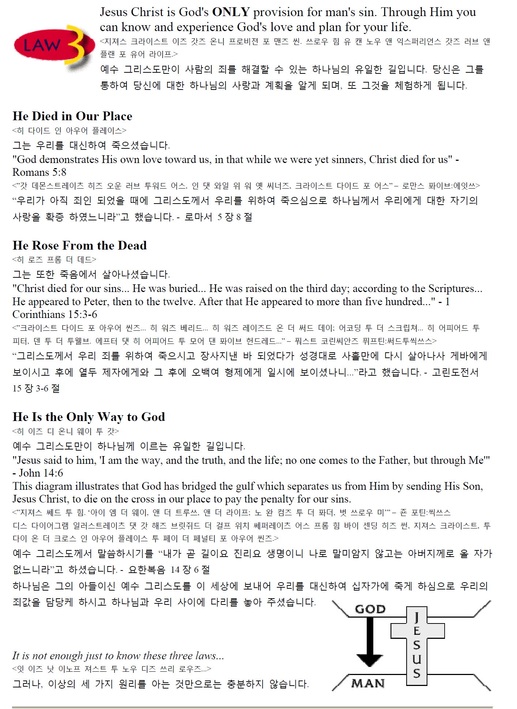
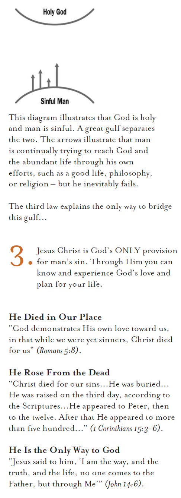
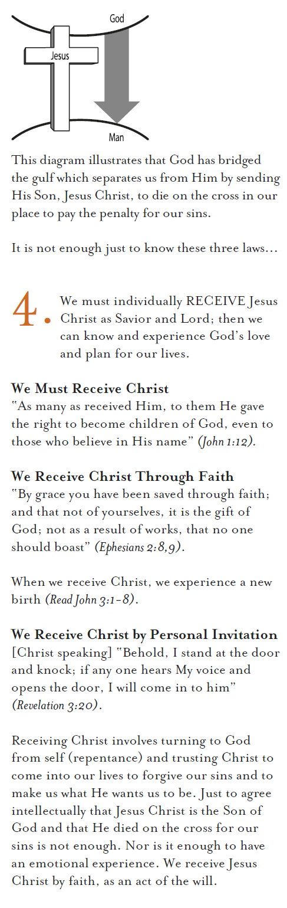
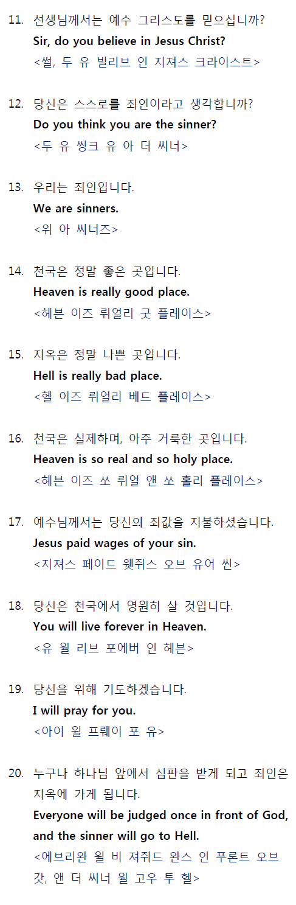
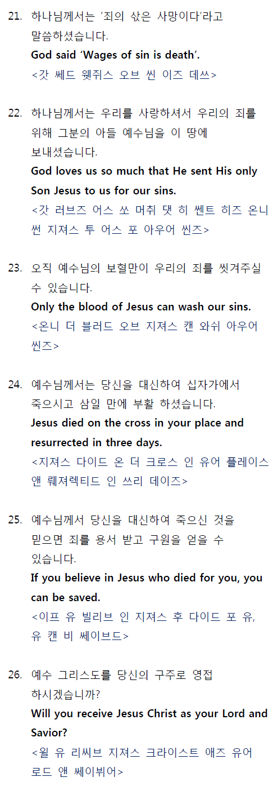
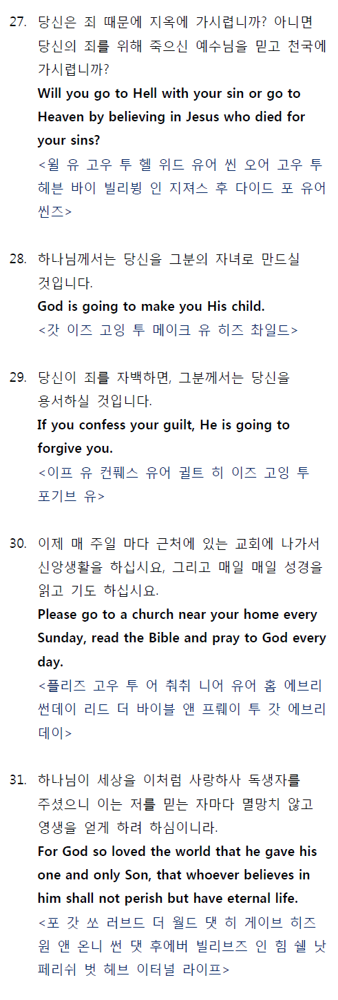

전도폭발훈련 (전문)
I. 들어가며...
안녕하세요! 저는 ( )교회 ( )성도입니다. 옆에 같이하신 이분은 ( )집사님, 그리고 이분은 ( )집사님입니다. 저희 방문을 허락해 주셔서 감사합니다.
교회에 다닌 적이 있습니까? (네, 잠깐요)
우리교회에 나오신 적이 있습니까? (네, 전에 친구따라…)
네 그러셨어요. 우리교회에 나오셨을 때 받은 인상은 어떠하셨어요? (신자가 많고 사람들이 친절한 것 같았어요.)
네, 우리교인들이 보통 표정이 밝지요. 그것은 영생을 소유하고 있기 때문입니다. 마음이 평안하고 기쁨으로 봉사를 하지요. 제가 영생을 얻고 어떻게 달라 졌는지 말씀 드려도 될까요? (그러세요.)
(여기서 자신의 개인간증을 한다. 영생을 얻은 후의 삶을 강조할 것.)
영생을 얻기 전 저는 굉장히 성격이 급했고, 신경질 적이었답니다. 특히 사소한 일로도 욕을 자주 하곤 했습니다. 그 때를 생각해 보면 내가 누구인가에 대한 끊임없는 갈망과 무언가에 대한 두려움이 있었습니다. 그리고 제가 구원을 받은 후 많은 것이 변했다는 것을 알 수 있었습니다. 천국에 대한 소망을 품게 되었고, 세상에 대한 담대함이 생겨 났습니다. 불안하던 저에게 평안함이 찾아 왔습니다. 물론 입도 많이 깨끗해 졌고요. 그리고 내가 누구인가를 알게 되었습니다. 이제 저는 오늘이라도 이 세상을 떠난다면 천국에 갈 것을 확신합니다.
질문하나 드려도 되겠습니까? (네)
어디까지나 가정인데요, 만일 선생님이 오늘이라도 이 세상을 떠난다면 천국에 들어갈 것을 확신하고 있습니까? (아니요)
그러시죠, 저도 수년 전 만해도 그런 확신이 없었습니다. 사실 그것을 확신할 수 있는지 또 그것을 확신하고 있는 사람이 있는지 조차도 모르고 있었어요. 많은 사람들이 세상일에 쫓겨 바삐 살며 천국일을 뒤로 미루기만 하다가 갑자기 일을 당하고 나면 당황 해하는 모습을 여러 번 보아 왔습니다.
성경에 보면 “내가 이것을 쓴 것은 너희로 하여금 너희에게 영생이 있음을 알게 하려 함이라.” <요한1서 5:13> 라고 말씀하고 있습니다.
제가 영생 얻은 것을 어떻게 알게 되었는지, 또 어떻게 하면 선생님께서도 그것을 아실 수가 있는지 말씀 드려도 되겠습니까? (네)
그러시면 먼저 이것을 좀더 분명히 해줄 질문을 하나 드려보겠습니다.
만일 선생님이 이 세상을 떠나 하나님 앞에 가서 섰는데 그분이 선생님에게 “내가 너를 나의 천국에 들어오게 해야 할 이유가 무엇이겠느냐?” 라고 물으신다면 어떻게 대답하시겠습니까? (저는 그렇게 나쁜짓을 많이 한 것 같지는 않은데요)
네, 선생님께서는 이 세상을 그렇게 나쁜 짓을 많이 하며 사시지는 않았다고 말씀하시겠다고 하셨지요. 제가 바로 들었습니까? (네)
제가 선생님을 처음 본 순간 선생님께 기쁜 소식을 전해드릴 수 있으면 하고 기대 했었는데 선생님의 대답을 듣고 보니 과연 선생님께서 지금까지 들어보신 것 중에 가장 기쁜 소식을 전해 드릴 수가 있을것 같습니다. 그것은 곧 천국은 아무 값없이 주시는 선물이라는 것입니다.
II. 복음
<은혜>
우리가 주위를 살펴보면 참으로 귀한 것들을 값없이 거저 얻고 있는 것이 많다는 것을 알 수 있지요. 공기, 물, 무엇보다도 햇빛 등이 거저 얻고 있는 대표적인 것들이 아니겠습니까? 이와 마찬가지로 천국의 영생도 거저 얻습니다. 성경에 보면, “너희가 그 은혜로 인하여 믿음으로 말미암아 구원을 얻었나니 이것이 너희에게서 난 것이 아니요, 하나님의 선물이라 행위에서 난 것이 아니니 이는 누구든지 자랑치 못하게 함이니라.” <예 2:8-9> 고 말씀하십니다.
선생님께도 소중한 친구 분이 있으시겠죠? (네)
성경 말씀에 “모든 사람이 죄를 범하였으매 하나님의 영광에 이르지 못하더니.” <롬 3:23> 라고 말씀 하십니다.
우리가 죄를 생각할 때 단지 강도, 살인, 간음 등을 먼저 생각합니다. 하지만 성경은 우리가 하나님을 기쁘게 해 드리지 못하거나 하나님의 법을 어기는 모든 것이 다 죄라고 말씀하고 있습니다. 우리가 성미를 부리거나 도둑질을 하는 등 하지 말아야 할 것을 하는 것도 죄입니다. 또 믿는 사람은 기도를 하지 않거나 성경을 읽지 않고 이웃을 내 몸같이 사랑하지 않는 것 등 해야 할 일을 않는 것도 역시 죄입니다. 죄는 행동으로만 짓는 것이 아니라 거짓말, 욕설, 정욕, 교만, 미움 등 생각과 말로도 짓습니다.
어떤 사람이 하루에 이런 죄를 열 번, 다섯 번 아니 딱 세 번만 짖는다고 생각해 보겠습니다. 만약 그런 사람이 있다면 그는 걸어 다니는 천사라 해도 될 것입니다. 하루에 세 번 이상을 불친절한 생각을 하거나 화를 내거나 하나님과 사람의 본분을 어기는 일이 없다면 그는 매우 훌륭한 사람이 아니겠습니까? 그러나 아무리 이렇게 선하게 산다 해도 한 달이면 90번, 일년이면 줄잡아 천 번의 죄를 짓게 됩니다. 70평생을 산다면 하나님의 법을 7만 번이나 어기는 범죄기록을 갖게 될 것입니다.
형사법원에서 7만 번의 범죄기록을 가진 상습범에게 어떤 벌이 내려질 것인가를 생각해 보십시오.
성경에는 “그러므로 하늘에 계신 너희 아버지의 온전하심 같이 너희도 온전 하라.” <마 5:48> 라고 말씀하고 있습니다. 어떤 사람은 나 자신만 바르고 악하지 않게 살면 된다고 생각할지 모르나 누구도 하나님의 법을 어김이 없이 온전할 수가 없기 때문에 우리 죄인은 자신을 구원 할 수가 없습니다. 어떤 사람들은 ‘내겐 그래도 선한 것들이 많아서…’라고 생각하며 자신의 선행으로 천국 갈 수 있기를 희망할지도 모릅니다.
성경에서 “이는 하나님은 사랑이심이라.” <요1, 4:8하> 라고 말씀하고 있습니다.
어떤 무장강도가 은행에서 500만원을 털었다고 생각해 보겠습니다. 비밀카메라가 현장을 포착하였고 은행직원과 또 다른 목격자들이 피의자를 확인하였습니다. 판사 앞에선 피의자는 범행을 부정할 수가 없어 “판사님, 제가 죄를 지었습니다”하고 고백했습니다. 그런데 그 강도가 “판사님, 강도 짓을 해서 대단히 죄송합니다. 하지만 제가 돈도 다 돌려 드렸고 또 아무도 해치지 않았기 때문에 이대로 풀어 주신다면 다시는 은행을 털지 않겠습니다”라고 말했다고 했을 때, 판사가 만일 그를 그냥 풀어 준다면 공정한 판사이겠습니까? 판사는 그가 지켜야 할 공정한 기준이 있습니다. 만일 그대로 그 강도를 풀어준다면 이 세상에 온전히 남을 은행이 하나도 없을 것입니다. 세상의 판사도 정의 때문에 범법자를 벌해야만 하는데 하물며 공의로우시고 거룩하신 하나님은 더 말할 필요가 없겠지요.
성경에 “태초에 말씀이 계시니라. 이 말씀이 하나님과 함께 계셨으니 이 말씀은 곧 하나님이시니라.” <요 1:1> 라고 말씀하시고 또 “말씀이 육신이 되어 우리 가운데 거하시매 우리가 그 영광을 보니 아버지의 독생자의 영광이요, 은혜와 진리가 충만하더라.” <요 1:14> 라고 말씀하십니다.
제 오른손에 있는 이 책이 제 삶을 상세히 기록한 책이라고 생각해 보면, 여기에는 저의 죄와 제가 한 말과 제 마음을 스쳐간 생각과 제가 한 행위가 낱낱이 기록되어 있을 것입니다. 그런데 여기에 문제가 있습니다. 바로 제 죄가 문제입니다. 하나님께서는 저를 사랑하시지만 저의 죄는 미워하셔서 반드시 벌하셔야 합니다. 하나님께서는 이 문제를 해결하시기 위하여 그의 사랑하는 아들을 이 세상에 보내셨습니다.
그런데 저는 부모 된 입장에서 깜짝 놀랄 말씀을 읽었습니다. 그것은 곧 이 그리스도께서 “하나님께 맞고 고난을 당하셨으며, 하나님께서 그로 상함을 받게 하시기를 원하사 무한한 질고를 당케 하셨다.” <사 53:4, 53:10 중> 는 것입니다.
여기에 열쇠 꾸러미가 있다고 가정해봅니다.
가다라 지방에 귀신들린 사람 속에 있던 귀신이 예수님께 말하기를 “하나님의 아들이여, 우리와 당신이 무슨 상관이 있나이까? 때가 이르기 전에 우리를 괴롭게 하려고 여기 오셨나이까?” <마 8:29> 라고 했습니다. 귀신들도 예수 그리스도께서 하나님의 아들이심을 믿습니다. 그러나 귀신들은 구원을 얻지 못하였습니다. 이런 지식적인 믿음뿐 아니라 일시적이거나 현세적인 믿음 또한 구원을 얻지 못합니다.
우리가 재정적인 문제로 주님을 의지할 때 그것은 재정믿음이라고 할 수 있습니다. 또 우리가 무슨 결정을 내리는 것을 도와 주시도록 주님을 의지한다면 그것은 결정믿음이라고 할 수 있습니다. 우리는 여행할 때 오가는 안전을 위해 여행믿음을 갖습니다. 이모든 믿음이 다 좋습니다. 하지만 이들 믿음에는 공통점이 있습니다. 그것은 모두 일시적인 믿음이 아니겠습니까? 그러한 문제들이 일단 해결되거나 지나가고 나면 우리는 더 이상 그 문제들로 주님께 의지하지 않게 되기 때문입니다.
그러면 제가 그리스도만을 신뢰하는 것이 어떤 것인지를 설명해 드리겠습니다.
그런데 제가 앉지는 않고 앉으면 편하겠지 하고 생각만 한다든지 또는 저의 소지품만 내려놓는다면 저는 편히 쉬는 것이 안될 것입니다. 송구스러운 표현이지만 이 빈 의자가 예수님이라고 생각해 보겠습니다. 제가 예수님께 안기면 참 좋겠다 라고 머리로 생각만 한다면 그것이 곧 지식적인 믿음이 됩니다. 또 저는 앉지 않고 저의 경제적인 문제나 가족들의 문제나 혹은 다른 어려운 문제만 맡긴다면 이것은 일시적이거나 현세적인 믿음이 됩니다.
믿음은 마치 어떤 왕의 선물을 받기 위해 내민 거지의 손과도 비유될 수 있습니다. 저는 수 년 전에 더럽고 무가치한 손을 내밀어 영생을 선물로 받았습니다. 그때 저는 그럴만한 아무런 자격이 없었습니다.
지금도 없습니다. 그러나 저는 영생을 가지고 있습니다. 주님의 은혜로 얻은 것이지요.
선생님, 저가 지금까지 구원을 얻는 복음의 핵심내용을 간략히 요약해 말씀 드렸습니다. 잘 경청해 주셔서 감사합니다.
III. 언약
어떻게 이해가 되시나요? (네)
네, 그러세요. 감사합니다. 이 영생을 선물로 받기를 원하십니까? (네)
네, 하나님께서는 선물로 주시기를 원하십니다. 이것이 선생님의 일생에 가장 중요한 결정이 되는 만큼 다시 한번 요약하겠습니다.
둘째로, 부활하여 살아 계신 그리스도를 영접하셔야 합니다.
셋째, 그리스도를 구주로 영접하셔야 합니다.
네 번째로, 그리스도를 주님으로 영접하셔야 합니다. 주님이라 함은 나의 삶의 주인 된다는 뜻입니다.
다섯 번째로, 회개하여야 합니다. 회개는 우리 죄를 용서받게 하며 또 앞으로의 우리 삶을 주님 뜻대로 살게 하는 방향전환이 됩니다. (아! 네)
<기도>
선생님께서 참으로 이렇게 하시기를 원하신다면 제가 선생님을 위해 기도 인도를 해 드리겠습니다.
“은혜로우시고 사랑이신 하나님 아버지! 오늘 ( )선생님의 집을 방문하여 귀한 복음을 전했습니다. 우리 ( )선생님께서 이 말씀을 잘 이해하고 또 잘 믿어서 앞으로는 내 뜻 대로가 아닌 주님 뜻대로 살 수 있는 복을 내려 주옵소서.
주 하나님, 저는 죄인입니다.
지금 제 마음 문을 열고,
그리스도를 구주로 영접합니다.
주님으로 영접합니다.
지금 제 마음 한가운데로 오셔서,
저의 지난날의 죄를 용서해 주시고,
저의 삶을 인도하시며,
영생을 선물로 주시옵소서.
네, 감사합니다. 감사하신 하나님 아버지, 지금 ( )선생님께서 예수님을 구주로, 주님으로 영접하였습니다. 선생님의 지난날의 죄를 용서해 주시고 이제부터는 주님 안에서 더욱 풍성한 삶을 살도록 인도해 주시고, 그래서 선생님의 이름이 하늘나라 생명 책에 기록될 수 있도록 축복해 주옵소서.
예수님의 이름으로 기도 드립니다. 아멘!“
방금 선생님께서 하신 것을 예수님께서 말씀하신 것이 요한복음 6장 47절에 있습니다. 읽어 주시겠습니까? (“진실로 진실로 너희에게 이르노니 믿는 자는 영생을 가졌나니.”) <요 6:47>
네, 죄를 회개하고 주님을 영접하여 마음으로 믿는 순간 영생을 이미 가졌다고 하셨습니다. 이제는 이 믿음으로 언제 이 세상을 떠나든지 우리는 천국의 영생을 가집니다.
만일 선생님께서 오늘 세상을 떠난다면 천국에 가실 것을 확신하십니까? (네)
만일 선생님께서 세상을 떠나 하나님 앞에 섰을 때 그가 선생님을 천국에 들어오게 해야 할 이유를 물으실 때 어떻게 대답하시겠습니까? (예수 그리스도를 나의 구주와 주님으로 믿습니다.)
감사합니다. 이제 선생님께서는 영적으로 다시 태어나셔서 하나님의 귀한 자녀가 되셨으며 오늘이 곧 선생님의 영적 생일이 됩니다.
IV. 나아가며...
이제 선생님께서는 저희와 한 믿음의 형제가 되셨으며 저희와 함께 이 소책자에 적힌 대로 믿음이 성장하시기를 바랍니다. 그러면 믿음의 성장을 위해 이 소책자를 잠깐 살펴 보겠습니다.
이제 형제님께서 하루에 한 장씩 요한복음을 읽어 주시면 좋겠습니다.
"여러분의 마음 속에 그리스도를 주님으로 모시고 거룩하게 대하십시오. 여러분이 가진 희망을 설명하여 주기를 바라는 사람에게는, 언제나 답변할 수 있게 준비를 해 두십시오." 베드로전서 3:15
Explosive Evangelism Practice
I. Introduction
A. Their Secular Life
B. Their Church Background
C. Our Church (Their impression)
D. Testimony (Church and personal)
The reason the church is here is to show the reality of eternal life in and through its caring people and to communicate to people how they might have life abundantly and eternally! I feel that we, as the church throughout history, have done an incredibly poor job of conveying that basic message. The result is that there are millions of people in the world today who go to church regularly - good people - who do not have eternal life. I must confess, and this may be true of you also, that I had lived a good many years as a member of a church (or If saved in early childhood, I'm glad that I have eternal life …), but somehow I had never come to the place of knowing for sure that I could have eternal life. Instead, I had a terrifying fear of death. etc …
Before I received eternal life …
Then I received eternal life …
Now that I have …
It's good news that when I die …
May I ask you a question?
E. Two Diagnostic Questions
Q1: Have you come to the place in you spiritual life where you know for certain that if you were to die today you would go to heaven?
The Bible says, "I write these things to you who believe in the name of Son of God so that you may know that you have eternal life." (1 John 5:13) May I share with you how I discovered eternal life and how you can know it too?
Before I do, may I ask you a second Question?
Q2: Suppose you were to die today and stand before God and He were to say to you "Why should I let you into my heaven?" What would you say?
Let me be sure I understand what you would say to God. You would say … (repeat his answer) … is that what you would say?
Well, when we started talking, I thought I might have some good news to share with you, but now that I've heard your answer to this question, I know I have the best news you will ever hear. That news is …
II. The Gospel
A. Grace
1. HEAVEN (ETERNAL LIFE) IS A FREE GIFT.
For example, the sunshine, fresh air, clean water are free for us. The eternal life in heaven is a free gift from God. The Bible says, "the GIFT of God is eternal life in Jesus Christ our Lord." (Romans 6:23b) It says God gives us heaven as a free gift.
2. IT IS NOT EARNED or DESERVED.
The Bible says, "By grace you have been saved through faith, and that NOT OF YOURSELVES; it is the GIFT of God, NOT OF WORKS, lest any man should boast." (Ephesians 2:8,9) You receive eternal life as a genuine free gift. No amount of personal effort, good works, or religious deeds can earn a place in heaven for you because eternal life like any genuine gift is free.
* Friend's Gift
Suppose your best friend (wife, husband, mother, etc.) were to surprise you with an expensive gift and let's suppose your response would be that of immediately digging into your purse or wallet for a couple of bills to (help) pay for the gift. What an insult that would be! You must accept gifts freely. If you pay even a penny, it is no longer a gift. It is the same with eternal life.
Then why do so many people not receive the gift?
This can be understood more clearly when we understand what Bible says about man.
B. Man
1. MAN IS A SINNER.
The Bible says, "For all have sinned and fall short of the glory of God." (Romans 3:23)
* Sin Defined
When we think of sin, many times we think only of robbery, murder, adultery, etc. But the Bible tells us that sin is anything that doesn't please God or a transgression of His law. Anything we do that we shouldn't, like losing our temper or stealing - these are sins of commission. Anything we should do but don't, like failing to pray or read the Bible, or to truly love our neighbor - these are sins of omission. There are not only sins of deed but also sins in word and thought like lying, cursing, lust, pride, and hatred.
The Bible says these are all sins.
By these standards, how often do you sin, brother/sister? Several dozen times a day - same for me.
* Three Sins a Day Illustration
According to psychologists, on average more than twenty thousand thoughts cross a person's mind. Suppose a person sinned only ten times a day or even five or even just three. Why, he would practically be a walking angel! Imagine if no more often than three times a day did he think unkind thoughts, or lose his temper, or fail to do what he ought towards God and man - he would be a pretty fine person, would he not?
Even if he were this good, he would still have over 1,000 transgressions a year! If he lived to be the average age of 70, he would have 70,000 violations of the Law of God on his records. Think what would happen to a habitual offender in a criminal court with 70,000 transgressions on his record. And because of this,
2. MAN CANNOT SAVE HIMSELF.
Then how good should we be to go to heaven? The Bible says "Therefore you shall be perfect, just as your Father in heaven is perfect." (Matthew 5:48) This verse says if we want to go to heaven by doing good, we have to be perfect in obeying God. But No one meets this standard.
* Omelet with Bad Egg Illustration
Suppose I invite you to my house. If I made a dish mixing one rotten egg with five fresh eggs, I couldn't expect you to willingly accept that dish. People often think they have done many good things. But in reality there are many rotten thoughts and acts within our lives. When we offer this to God, we cannot expect God to receive it joyfully.
Do you see why it is impossible? However,
C. God
1. God is merciful therefore doesn't want to punish us.
This is because, "God is love …" (I John 4:8b) Bible says, "I have loved you with an everlasting love." (Jeremiah 31:3b)
2. God is also just therefore must punish sins
He says, "I will by no means clear the guilty." (Exodus34:7b), "The soul who sins shall die." (Ezekiel 18:4)
* Bank Robber Illustration
Suppose I were to rob a bank of $5,000. A hidden camera takes movies of me in the act, the teller and other eye witnesses identify me as the robber. When I am brought before the judge, the evidence is undeniable, so I respond, "I am guilty, Your Honor." Suppose I were then to say to him, "Judge, I am very sorry that I robbed the bank. You have the money back and no one was hurt. I promise you I will never rob another bank if you will just let me go.” Would the judge be just if he let me go?
He has a standard of Justice that must be satisfied. If he would let me go, there would be no bank safe in the land. If a human judge, because of justice, must punish law-breakers, how much more a just and holy God must punish sin! That's why the Bible says He can by no means leave the guilty unpunished.
We have a problem. We have all sinned. The penalty for sin is death. We need forgiveness so that we can have a right relationship with God. God solved this problem for us in the Person of Jesus Christ.
D. Christ
1. Jesus Christ is the infinite God-man.
The Bible says about Jesus Christ. "In the beginning was the Word and the Word was God, and the Word became flesh and dwelt among us." (John 1:1,14) Jesus Christ came to earth and lived a sinless life,
but while on earth, WHAT DID HE DO?
2. He died on the cross and rose from the dead to pay the penalty for our sins and to purchase a place in heaven for us.
* Record Book of Sin Illustration
Let's imagine this book in my right hand is a minutely detailed account of my life. Each page details the sin of a particular day, every word I have spoken, every thought that ever crossed my mind, every deed I've ever done. Here then (hold up the book) is the problem - my sin. (Place book in palm of left hand) God loves me (point to your left hand) but He hates my sin (point at the book on top of your hand) and must punish it.
To solve this problem, He sent his beloved Son into the world (lift up right hand parallel to the left hand). The Scripture says, "All we like sheep have gone astray, we have turned, everyone to his own way, and the Lord had laid on Him the iniquity of us all." (Isaiah 53:6) (As you say words, "laid on Him," transfer the book in one distinct motion from your left hand to the palm of your right and leave it in the right hand.) All of my sin which God hates has been placed on His beloved Son.
“Christ bore our sin in His own body on the tree.” (I Peter 2:24)
* Tetelestai illustration
Finally, when the last sin had been paid for, Jesus said, "It is finished!" This is an interesting word in the original text. It is Tetelestai, a commercial word which means,
"It is paid; the debt is paid all."
Jesus paid all the expense of our sins. This gift we receive by faith.
E. Faith
Faith is the key that opens the door to heaven. You probably have a key chain with many keys like this. Keys look similar. But if you try to open the door in my house, there is only one key that works. It is no use believing other keys could work. Only with the right key you can open the door. The right key to the gate to heaven is true faith in our savior. But many people mistake two things for saving faith:
1. One is mere INTELLECTUAL ASSENT, that is, believing certain historical facts.
* Intellectual Assent Defined
Some people believe in Jesus Christ the same way they believe in Napoleon or George Washington. They believe that He actually lived. He was a real person in history, but they are not trusting Him to do anything for them now.
* The Devil Illustration
The Bible says the devil believes in God. Did you know that? The demons in the Gadarene demoniac said, "What have we to do with thee, Jesus, thou 'Son of God'? Are thou come hither to torment us before the time?" (Mark 5:7) Even the demons believe in the deity of Christ! But they evidently weren't saved!
2. The other is mere TEMPORAL FAITH, that is, trusting God for temporary crises such as financial, family, or physical needs.
* Temporal Faith defined
When you have trusted in the Lord for your finances, you could call that financial - faith. You may have prayed and trusted the Lord to take care of your family - you could call that family - faith. You may have prayed and trusted the Lord to give you a safe trip - you could call this traveling - faith. There is one thing all these have in common.
They are of a temporary nature. They are temporal. Once your financial needs are met, you no longer need to trust the Lord, once you have safely reached
your destination, you don't need to trust the Lord for traveling faith. All the things of this would shall pass away. They are temporary. Now many people I find, trust the Lord for all these temporary matters.
Now these are good, and you should trust Christ for these, but they are not saving faith! What is saving faith then?
3. SAVING FAITH is trusting in Jesus Christ alone for eternal life.
It means resting upon Christ alone and what He has done rather than upon what you or I have done to get us into heaven. The Bible says, "Believe in the Lord Jesus Christ, and you will be saved." (Acts 16:31a) Let me illustrate the faith trusting Jesus alone by this chair.
* Chair Illustration
You do believe this chair exists don't you? (point to empty chair) (Yes) Do you believe this chair would support me if I were to sit on it? (Yes) But it is not supporting me now for a very simple reason. I am not sitting on it. For the sake of making my point, let the chair where I am sitting represent me, and this empty chair represent Jesus Christ. For a long time I believed He existed and could help me. But I did not have eternal life because I was trusting my own good works to support me into Heaven.
Remember what you said you would say to God if He asked why He should let you into Heaven? You said. "I try to do the best I can …" Who is the only person referred to in your answer? "I" Who were you trusting to get you to Heaven when you said that? "Yourself" To receive eternal life I must transfer my trust from myself to Jesus Christ alone for eternal life (sit in empty chair). Does this make sense to you?
* "P.S." Motive for Godly Living
A president of Princeton once said: "As a young man I accepted Christ and the gift of eternal life. All the rest of my life has been simply a P.S. to that day, saying, "Thank you, Lord, for what you gave to me then." The motive for Christian living is gratitude for the gift of eternal life. "The love of Christ constrains us." (2 Corinthians 5:14a)
* Beggar's Hand
Faith is like the hand of a beggar receiving the gift of a King. We don't deserve the gift of eternal life. But we can have it, if we will receive it by faith.
I presented you the key story of Bible.
III. Commitment
A. Transition
Does this make sense to you?
B. Commitment
Brother/Sister ________ we cannot see God now but He is here. Right now God is asking you.
"My dear daughter (son), I would like to give you the gift of eternal life. Will you receive it?" Would you like to receive the gift of eternal life? (yes)
C. Clarification
You have made a very important decision. Because this is the most important decision in your life, I would like to clarify it once more. To receive the gift of eternal life.
First, you need transfer your trust from yourself to Jesus Christ. Do you want to do that? (yes)
Second, you should receive the resurrected and living Christ. into your life.
Third, you should receive Christ as your savior. The Scripture says "Here I am! I stand at the door and knock. If anyone hears my voice and opens the door, I will come in and eat with him and he with me." Do you want to receive Jesus as your savior?
Fourth, you should receive Jesus as your lord. Until now, you have been the lord of your life. Now you should leave the wheel to Jesus, who created you, knows best, and wants to give you the best.
Finally, you should repent. Until now you have had your back turned on God. Just like a U-turn sign, you turn the direction of your life toward God. Do you really want to turn your life around? (yes)
D. Prayer
If this is what you really want, I can lead us in prayer and we can tell God what you just told me.
Let us pray.
1. Pray for him
Truly wonderful God, we thank you that you led brother/sister ________ to hear the good news, which was achieved by Jesus who did not spare even His own life to save us. Please help her understand and believe this good news and repent.
2. Pray with him
Brother/Sister ________, Christianity is a religion of confession. Please repeat after me. Our Father, I have sinned. I thank you for dying on the cross to forgive my sin. Now I open my heart, and receive Jesus to the center of my heart as the savior and the Lord. I leave my life onto your hands. From now on, I want to live trusting Jesus alone. Please help me. In the name of Jesus we pray. Amen.
3. Pray for him
Dear Loving Father. Thank you. We have prayed upon your words of promise. As many as received Him, to them He gave the right to become children of God, ever to those who believe in His name. I thank you for this brother/sister ________ born again as your daughter (son). I ask you to give her assurance that all her sins were forgiven and she is a God's child now. We do not know what is waiting for her in the future. But I ask you to help her become pure and blessed in favor of God and men. In the name of Jesus we pray. Amen.
E. Assurance
1. I would like you to read something Jesus says about what you have just done.
Would you like to read John 6:47. ?
He who believes has what? (eternal life)
Read the verse again with your name in it. please. ?
2. Two Diagnostic Questions
Based on this verse, I want to ask you one more time. Brother/Sister ________ if you were to die today, do you know for certain that you would go to Heaven? (yes)
if God were to say to you, "Why should I let you into my heaven.” What would you answer (because I believe in Jesus.)
3. Welcome to the family of God
You are born again as a God's child by trusting Jesus and become a member of the God's family. We welcome you and congratulate you to join the God's family.
IV. Immediate Follow Up
This is for you to congratulate your spiritual birthday. This will be of great help for you. In the first half of this book, there is a summary of what we have talked today. In the second half, it explains how your faith can grow well. I well show you the first part.
Would you like to read 'My spiritual Birth Certificate'? Is this the decision you have made? (yes)
If so, please write down today's date here and sign here. I will sign as a witness who presented the good news to you and saw you receive it today. If you have any questions or need any help, please do not hesitate to contact me anytime. I will do my best to help you.
Brother/Sister ________, parents will be glad when a newborn baby grows well. In the same way, God wants you to grow well because you are a spiritually new-born baby.
There are five means of growth in this book. Please take a time to look at them.
Thank you very much for listening for a long time. See you and Good-bye.
"Give honour to Christ in your hearts as your Lord; and be ready at any time when you are questioned about the hope which is in you, to give an answer in the fear of the Lord and without pride." 1 Peter 3:15
사영리 (한영)




"그대는 말씀을 선포하십시오. 기회가 좋든지 나쁘든지, 꾸준하게 힘쓰십시오. 끝까지 참고 가르치면서, 책망하고 경계하고 권면하십시오." 디모데후서 4:2
Four Spiritual Laws (Simple)
If you've gone through a discussion with someone and you want to present the gospel message in a simple and systematic way, the well-known "Four Spiritual Laws" can be of help. They are simple, to the point, and use Scripture to convict, convince, and convert. They are:
1. God loves you:
"For God so loved the world, that He gave His only begotten Son, that whoever believes in Him should not perish, but have eternal life," (John 3:16).
The problem:
2. All of us have broken Gods laws, living our own way ignoring God. This is called sin and our sins have separated us from God:
Man is sinful and separated from God. "For all have sinned and fall short of the glory of God," (Rom. 3:23); "For the wages of sin is death," (Rom. 6:23); "But your iniquities have made a separation between you and your God," (Isaiah 59:2).
3. God sent His only Son Jesus Christ to die for our sins:
Jesus Christ is God's only provision for man's sin. "I am the way, and the truth, and the life; no one comes to the Father, but through Me" (John 14:6); "But God demonstrates His own love toward us, in that while we were yet sinners, Christ died for us," (Rom. 5:8).
4. If you want to accept Jesus Christ as your Saviour and Lord you must turn from your sins. To ask Jesus to be your Saviour and Lord simply pray from your heart, He loves you personally and will save you:
We must individually receive Jesus as Saviour and Lord. "But as many as received Him, to them He gave the right to become children of God, even to those who believe in His name," (John 1:12); "if you confess with your mouth Jesus as Lord, and believe in your heart that God raised Him from the dead, you shall be saved," (Rom. 10:9); "For by grace you have been saved through faith; and that not of yourselves, it is the gift of God," 8 For by grace are ye saved through faith; and that not of yourselves: it is the gift of God: 9 Not by works, lest any man should boast. (Eph. 2:8-9).
Pray this prayer
Dear Father God,
I realise I am separated from you by my sinfulness and need your forgiveness in my life. I am sorry that I have been going my own way instead of your way. I believe that Jesus Christ shed His precious blood and died for me on the cross paying in full for all my sin, I confess with my mouth that Jesus is my Lord and believe in my heart that God raised Him from the dead. I willingly turn from my life of separation from You. I now invite you Jesus Christ to come into my heart as my personal Saviour and Lord. I believe I am forgiven and saved,
Amen.
Four Spiritual Laws (Full)





"Be preaching the word at all times, in every place; make protests, say sharp words, give comfort, with long waiting and teaching." 2 Timothy 4:2
전도용 영어대화예


